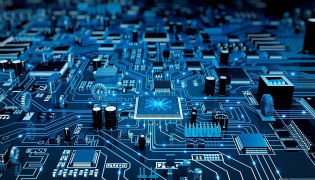
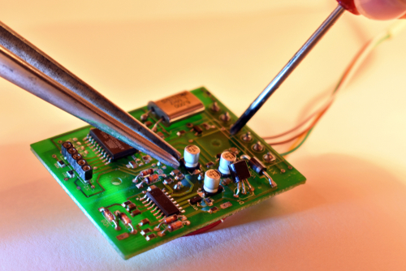
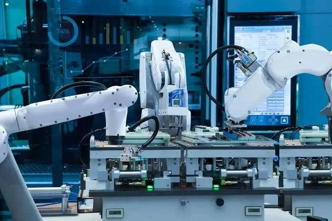
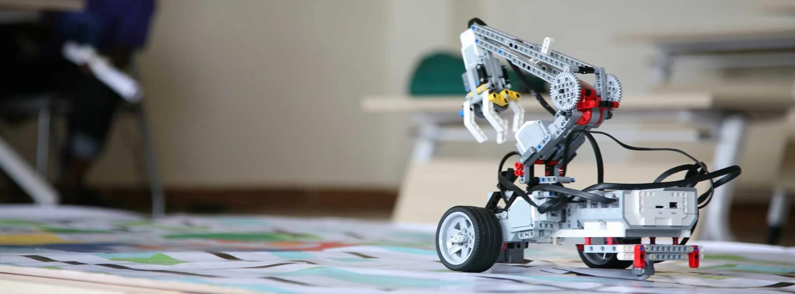
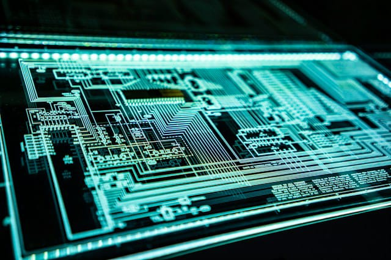
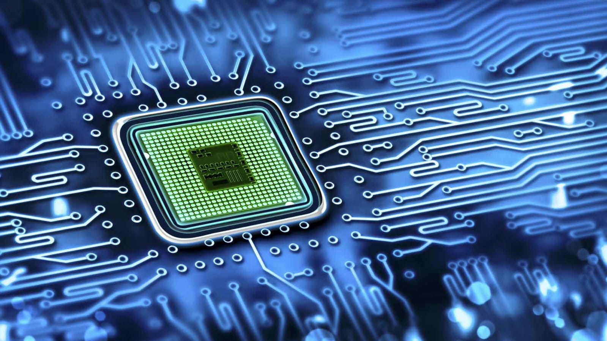
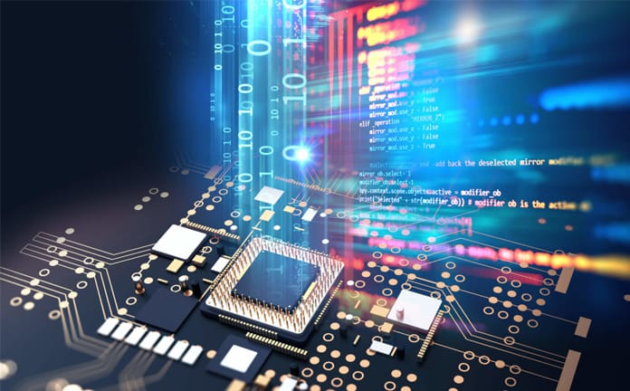
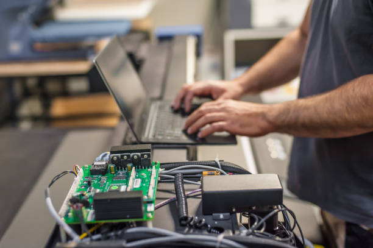
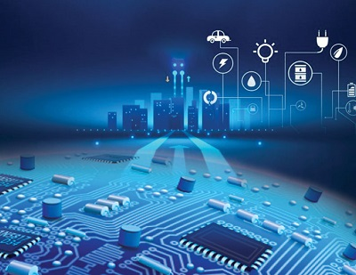
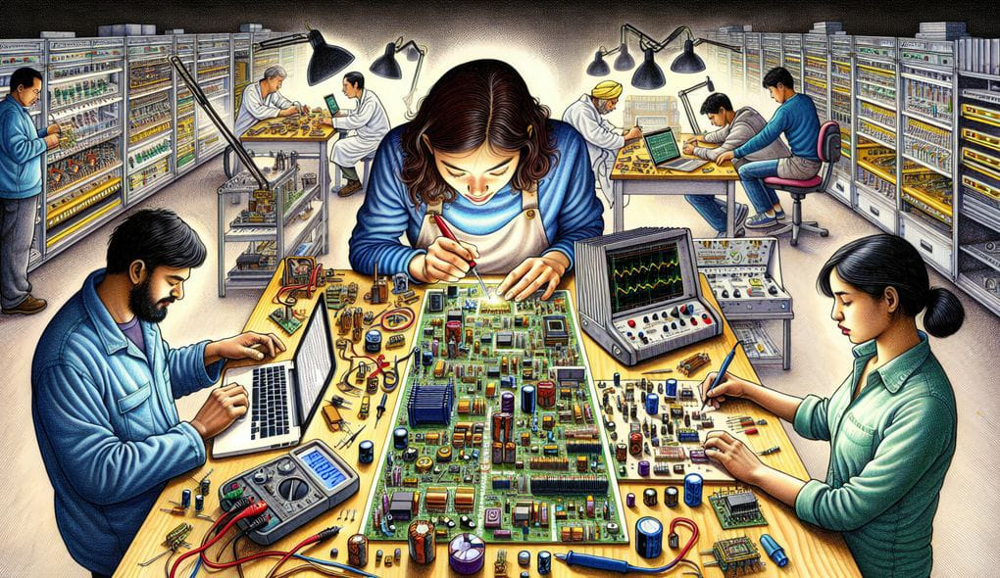

Focuses on the design and development of small electronic components like microchips and semiconductors.Miniaturization: Microelectronics deals with the miniaturization of electronic devices and systems, typically at the microscale or nanoscale level2 . Semiconductor Materials: Many microelectronic devices are made from semiconductor materials like silicon3 . Components: It involves the creation of components such as transistors, capacitors, inductors, resistors, diodes, and insulators4 .

Involves the creation and improvement of robots and automated systems for various applications.You more abou Robotics and Automation Engineering: Copilot Robotics and Automation Engineering is an exciting and rapidly evolving field that focuses on the design, development, and application of robots and automated systems1 . Here are some key aspects: Design and Development: Robotics engineers design and develop robots and automated systems for various applications, from industrial manufacturing to healthcare2 .

Specializes in the integration of hardware and software to create systems like smart appliances and automotive systems.Embedded Systems Engineering is all about integrating hardware and software to create specialized systems that perform dedicated functions within larger systems. Here are some key aspects: Integration: It combines both hardware (like microcontrollers or microprocessors) and software designed to control the hardware. Real-Time Operation: Many embedded systems operate in real-time, meaning they process data and execute commands without significant delay.

Deals with the development of systems and devices used in telecommunication networks. Communications Engineering is centered around the development and maintenance of communication systems, ensuring efficient and reliable transmission of information. Here are the key aspects: Telecommunications: Designing and improving telecommunication networks, including the internet, telephone networks, and broadcasting systems. Signal Processing: Involves the manipulation and interpretation of signals to improve quality, enhance security, and increase efficiency. Wireless Communication: Developing technologies for mobile communication, satellite communication, and Wi-Fi.
Focuses on the design, development, and testing of computer components like processors, memory devices, and circuit boards.Computer Hardware Engineering is a branch dedicated to the design, development, and testing of computer components. Here are the core aspects: Component Design: Focuses on creating essential computer components such as CPUs, GPUs, motherboards, memory devices (RAM, ROM), and storage devices (HDDs, SSDs). Integration: Ensures different components work seamlessly together, optimizing for performance, efficiency, and power consumption. Testing and Validation: Involves rigorous testing of hardware components to meet standards and specifications, ensuring reliability and durability.

Involves the design and implementation of systems to control and convert electric power efficiently. Power Electronics Engineering focuses on the control and conversion of electrical power using electronic systems. Here are the key aspects: Power Conversion: Involves converting electrical power from one form to another (e.g., AC to DC, DC to AC, and voltage level adjustments) using devices like rectifiers and inverters. Efficiency: Designs systems to ensure maximum efficiency in power conversion, reducing energy losses.
